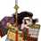

Total War Encyclopaedia
Manual
Units
Buildings
Arts
Clans
Characters
Provinces
Specialities
Tutorials
Campaign Selection
Units
Spear Infantry
Spear Infantry
Yari Ashigaru
Yari Ashigaru Garrison
Hattori Yari Ashigaru
Ikko Ikki Yari Ashigaru
Oda Yari Ashigaru
Yari Hero
Yari Ronin
Yari Samurai
Hattori Yari Samurai
Oda Long Yari Ashigaru
Date Bulletproof Samurai